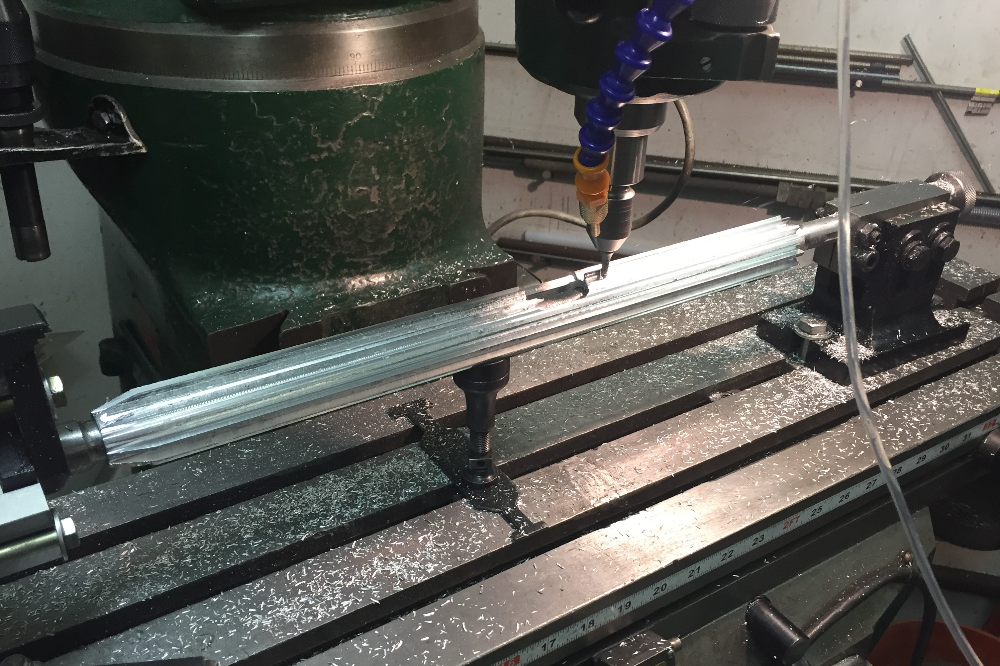

BF-762
Fall 2019
Toggle locks are cool, belt-feeds are cool.
I wanted to build a higher-powered rifle with a locked breech for a while, and why not make a belt-fed rifle too? Since a belt-fed rifle will obviously go through a lot of ammunition so this limited me to cheap cartridges for economic reasons. That meant I had to go with, basically, .22lr, 9mm, 5.56mm, or 7.62x39mm. The first two are a little too light for what I wanted. From the last two, 7.62x39 is more powerful while having lower pressures and more case taper, which makes it easier to work with.
The design uses a toggle-locked system, similar to the Luger pistol. When the gun is in battery, the toggle is slightly over-center, preventing the bolt from opening. However, unlike the Luger, which unlocks the toggle via recoil operation, the BF762 is gas-operated. A gas piston is pushed forward by the high-pressure gas from a port under the barrel, pulling on a linkage that forces the toggle open. By designing the gas piston to be pulled forward instead of pushed backwards, the piston rod is kept under tension, so that it can be made smaller without buckling. The bolt features vertical grooves that engage with a round from the belt and pull it backwards out of the belt. A flat spring forces the cartridge to slide down the grooves, displacing the previous case and aligning the new cartridge with the chamber. When the bolt closes again, the top of the grooves spring over the next round in the belt. Feeding the belt forward is done via a set of pawls on the left side of the gun, which push the next round into position as the bolt is moving forward, due to the action of a cam on the bottom of the piston rod.
The gun is also air-cooled, featuring a large aluminum finned jacket around the barrel. The fit between the jacket and the barrel is not nearly as good as I'd like, but the first 6 inches of the barrel, which usually would get the hottest, have a bronze bushing made that allowed me to get a very close fit with the jacket to maximize heat tranfer. I'm not sure if I'm actually helping anything or not, so I'll have to do some testing to see if the jacket is actually increasing heat dissipation.

The cooling jacket being machined.
While I had initially thought I might try using electro-chemical machining to make the barrel, I ultimately decided I was too busy to experiment with that, so I'm just using a slightly modified M70 barrel.
I've had two major problems with this gun so far. One was that the relatively small size of the fire control group did not allow a strong enough hammer spring to trigger the notoriously hard primers of cheap surplus Russian 7.62x39 ammunition. This is not an uncommon problem, and there are many popular professionally manufactured rifles (like the mini-14) that can't fire that hard-primed ammo, so I'm not terribly upset aside from now needing to pay a lot more for the ammunition to get American ammunition that has much softer primers. The second problem is that I haven't been able to get enough impulse from the gas piston to fully cycle the action. This was entirely my fault, as I had a misconception that the gas-operation was a source of nearly unlimited energy, and I was very concerned about overgassing the system. So ultimately the gas port was placed too far forward on the barrel, and so the duration of the piston impulse was too low. I'm still working out a solution to this that doesn't involve moving the gas block back, since that will be a lot of work. For now I'm going to reduce the hammer-spring force, try to reduce the strength of the recoil springs, and increase the diameter of the gas piston. If this all fails, then I will make a new gas block and move it back much closer to the chamber which will increase the energy available for the piston. This would be very inconvenient because I would need to reconfigure the recoil springs and make a new cooling jacket.